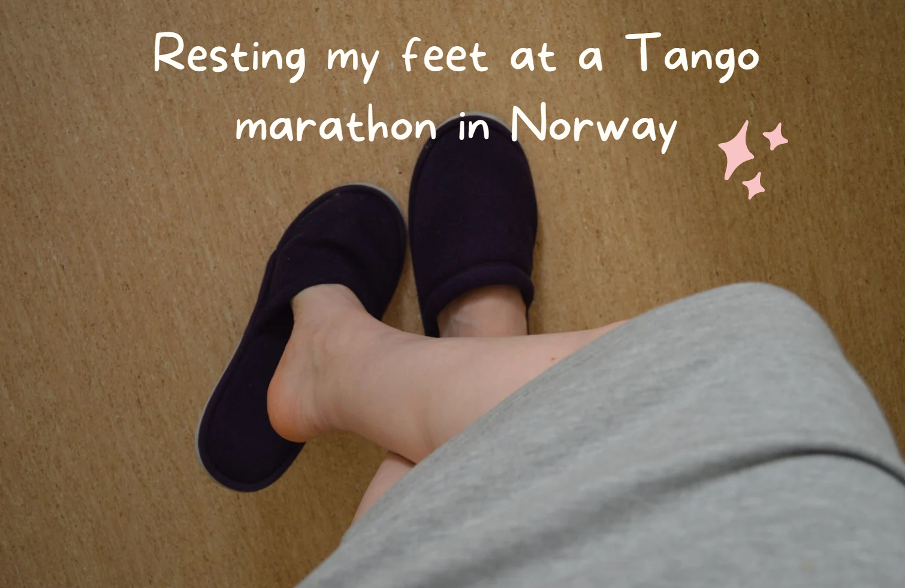

When I attended my first tango festival, I had no idea how to prepare! These are the most important things I wish I'd known back then:
When you are dancing day and night, you will appreciate the health of your feet more than ever! Make sure you have comfortable dancing shoes and avoid using shoes that are not made for dancing. Trust me, they can hurt your feet quite badly (I've been there!).
Doing a gentle massage on your feet when you take breaks will make you feel refreshed and ready for the next class or event.
Hydration is a huge factor in tango festivals and marathons! Of course, it's important that you have a water bottle with you at all times. And in addition to that, using a hydration mask at the end of the day can be magical.
One time I attended a tango marathon in Oslo, Norway, and the organizers welcomed us with a new pair of slippers! (photo below). It was so nice to be able to use them and have a little feet rest from time to time.
When dancing tango for hours, we might forget to stretch our bodies before and after classes or milongas. I find that stretching the legs, especially after dancing for a long time, helps me get more joy from having danced and be better prepared for dancing again soon after.
I hope this is helpful for you, and to see you soon at the Tango Festival in Wellington next month!
If you are looking to level up your tango ahead of the festival, don't hesitate to get in touch. You can see my availability in the link below 😊
Happy dancing! 🎶